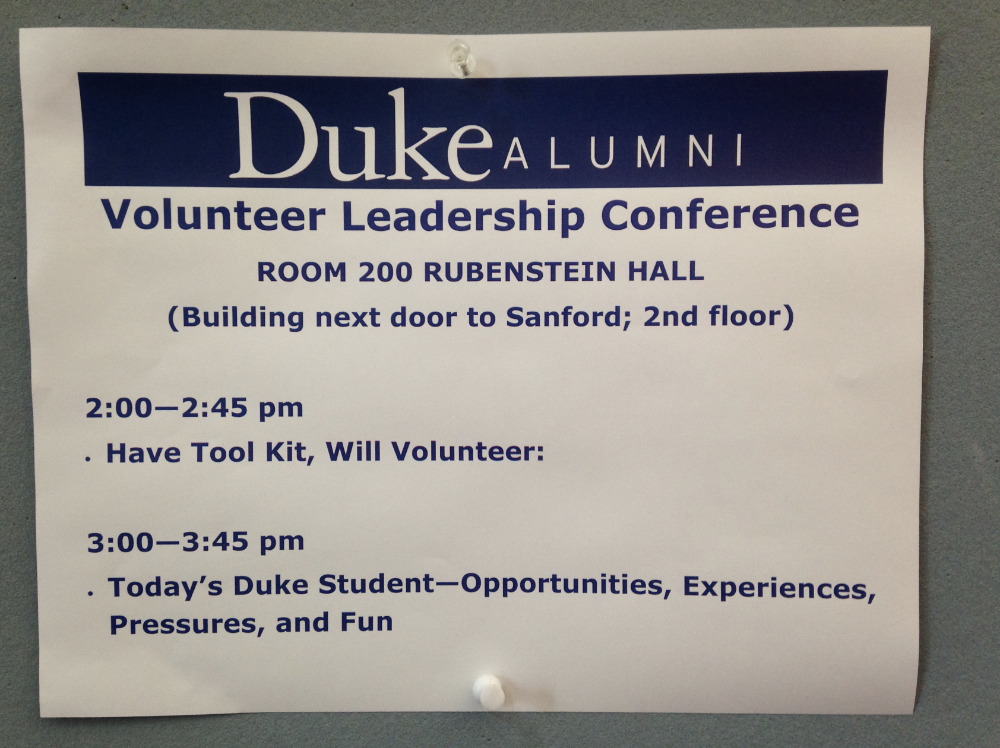

![]()
{kind=link}

Truth and Beauty with Data in R
Session I An Introduction to the Tools
Workshop schedule
Initial setup and welcome 9:00–9:10 AM
Things to do:
- Make a free account at Posit.cloud
- Join the workshop Posit Cloud group
- Make sure you have access to Canvas
Truth, beauty, and data 9:10–10:00 AM
Workshop materials:
Getting started with R and RStudio 10:00–10:40 AM
Workshop materials:
- Slides for “Getting started with R and RStudio” (HTML | PDF)
- Slides for “Data basics” (HTML | PDF)
- Posit Cloud project
Break 10:40–10:50 AM
Visualize data with {ggplot2} 10:50 AM–12:00 PM
Workshop materials:
- Slides for “Visualize data with {ggplot2}” (HTML | PDF)
- Posit Cloud project
Other resources:
- Hadley Wickham, Mine Çetinkaya-Rundel, and Garrett Grolemund, R for Data Science, chapter 1: “Data tisualization”
Lunch (Room 840) 12:00–1:00 PM
Transform data with {dplyr} 1:00–3:15 PM
Workshop materials:
- Slides for “Transform data with {dplyr}” (HTML | PDF)
- Posit Cloud project
Other resources:
- Hadley Wickham, Mine Çetinkaya-Rundel, and Garrett Grolemund, R for Data Science, chapter 3: “Data transformation”
Break 3:15–3:30 PM
Principles of graphic design 3:30–5:00 PM
Workshop materials:
Other resources:
- Robin Williams’s The Non-Designer’s Design & Type Books
- Summary of CRAP graphic design principles from Garr Reynolds’s Presentation Zen
- Matthew Butterick, “Typography in ten minutes”
- Oliver Schöndorfer, “Font Matrix – See & Pair Typefaces Like Never Before”
- Adobe Creative Cloud
- Affinity Suite
- Canva
Your turn #1
You’ve just learned about CRAP:
- Contrast
- Repetition
- Alignment
- Proximity
Now you get to test out your newfound skills and critique a few designed objects!
In your group, introduce yourselves briefly and then do the following for each of the designs listed below:
Evaluate the design’s contrast in typography, colors, graphic elements (like logos, images, etc.), and other parts of the design. What works? What doesn’t work? What might you tweak to improve the contrast?
Evaluate the design’s repetition. Which design elements are repeated? Which aren’t? Which should be? Which shouldn’t be? What might you tweak to improve the repetition?
Evaluate the design’s alignment. Draw lines on the page (or imagine them, since you’re on a computer) and count how many different alignments there are. What works? What doesn’t? What might you tweak to improve the alignment?
Evaluate the design’s proximity. Are related items groups appropriately? Is there a clear visual hierarchy that the reader can easily follow to understand the message of the design? What works? What doesn’t? What might you tweak to improve the proximity?
Evaluate combinations of CRAP principles. Is there repetition and contrast in alignment, for instance?
Designed object 1
Download this image from a conference held at Duke University some time in 2017.
Designed object 2
Download this PDF of a handout for an international nonprofit that works with water projects in Kenya.
Designed object 3
Download the 2022 Annual Report for Médecins Sans Frontières (Doctors Without Borders) here. It’s 76 pages, so there’s no way you can critique the whole thing. Look at the first 10–20 pages and critique those more broadly.
Our turn
Duke Alumni
Volunteer Leadership Conference
Room 200 Rubenstein Hall
(Building next door to Sanford; 2nd floor)
2:00-2:45 pm
- Have Tool Kit, Will Volunteer:
3:00-3:45 pm
- Today's Duke Student—Opportunities, Experiences, Pressures, and FunMilestones
1: {ggplot2}
Open this Posit Cloud project and complete the re-creations and extensions in 01_ggplot.qmd.
When you’re all done, click on the “Render” button at the top of the editor window to render the document to a PDF or Word file. Upload that file to Canvas.
2: {dplyr} and {ggplot2}
Open this Posit Cloud project and complete the re-creations and extensions in 02_dplyr-ggplot.qmd.
When you’re all done, click on the “Render” button at the top of the editor window to render the document to a PDF or Word file. Upload that file to Canvas.
3: Poster critique and re-design

Part 1: CRAP critique
Critique the design of the poster for the BYU Student Wellness Center workshop above. Go through the CRAP checklist and analyze how well or poorly the poster follows each of the principles. Discuss how the poster’s adherence to (or non-adherence to) these principles influences its effectiveness.
Part 2: CRAP redesign
Redesign the poster for the BYU Student Wellness Center workshop. Use whatever program you want—even PowerPoint if you’re most comfortable with that, though it’ll probably be easier to use something like Canva or Adobe Illustrator. If you use Canva, don’t use any of the built-in templates—start from scratch with a blank page.
To save you from retyping everything, I’ve included all the text and Student Wellness hex logo in the zip file below:
I didn’t include the Instagram logo. If you want to use that, go find one online. You don’t have to use it. You don’t have to use the big paragraph of text either—you can rewrite it to shrink it down if you want.
Part 3: CRAP critique
Critique your new design using the CRAP checklist. How did you use contrast, repetition, alignment, and proximity in your improved design?
Project
Open this Posit Cloud project and follow the instructions in 04_project.qmd.
When you’re all done, click on the “Render” button at the top of the editor window to render the document to a PDF or Word file. Upload that file to Canvas.